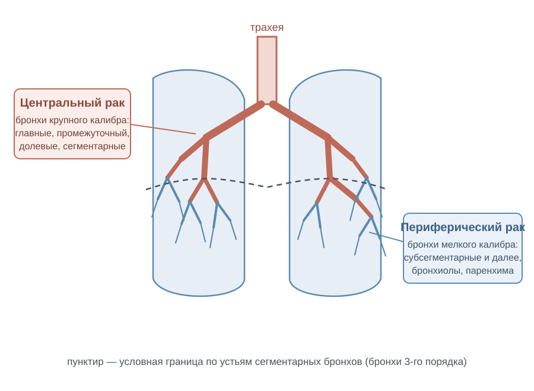
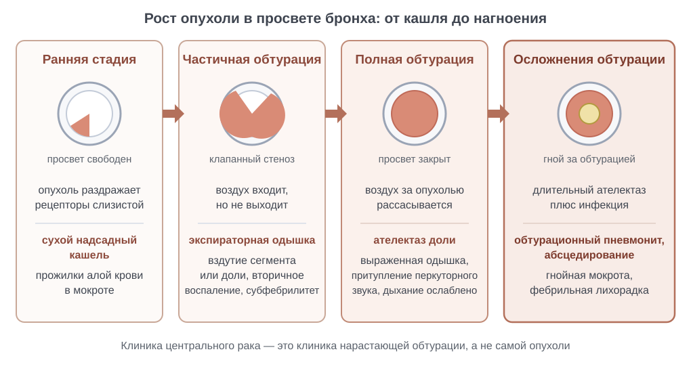
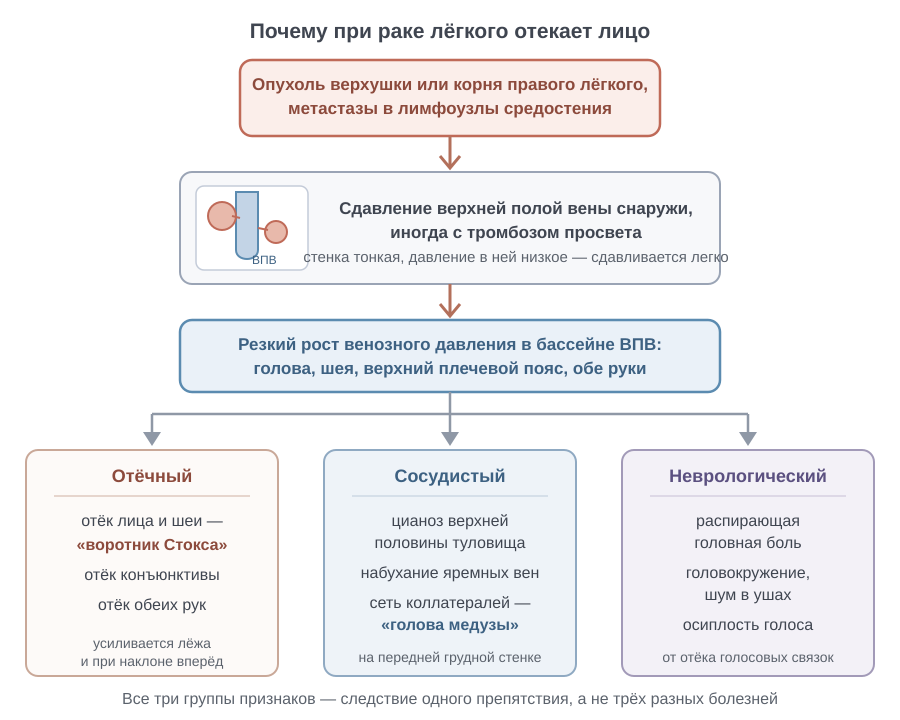
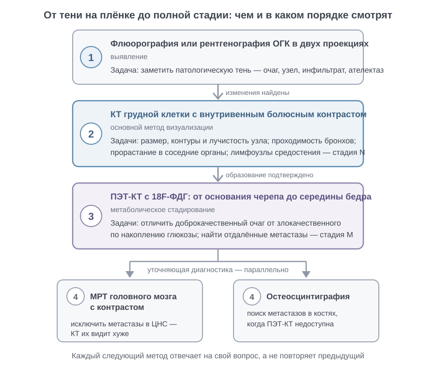

Рак лёгкого
Гистологическая классификация рака лёгкого
Чтобы выбрать правильное лечение, доктору сначала нужно точно выяснить строение опухоли под микроскопом. В клинике все злокачественные новообразования лёгких принято делить на две большие группы: немелкоклеточный рак и мелкоклеточный рак. И эта разница принципиальна.
Если перед нами немелкоклеточная опухоль на начальном этапе, больного можно спасти скальпелем: главным методом остаётся операция, то есть анатомическая резекция лёгкого. А вот с мелкоклеточным раком всё иначе. Он ведёт себя как изначально распространённая, генерализованная болезнь. А если бы хирург и попытался убрать такой очаг, толку бы не вышло: клетки уже успели рассеяться по организму, поэтому здесь требуется только срочная системная полихимиотерапия.
Среди немелкоклеточных опухолей чаще всего находят две формы. Первая из них — плоскоклеточный рак. Он зарождается из мерцательного эпителия бронхов, который переродился, то есть метаплазировал из-за постоянного дыма сигарет. Под микроскопом в нём видны тонкие мостики между клетками и плотные белковые слои кератина — патологоанатомы называют их «раковыми жемчужинами».
Растёт этот рак обычно центрально — поражает крупные пути: главные, долевые или сегментарные бронхи. Отсюда и быстрое появление надсадного кашля, и спадение лёгочной ткани.
Вторая частая форма — аденокарцинома, или железистый рак. Она строится из цилиндрических клеток дальних отделов бронхов и бокаловидных слизистых желёз. Под микроскопом она складывается в трубочки и ветвящиеся сосочки, которые обильно вырабатывают слизь. Ложится аденокарцинома иначе — периферически, прямо под плевру, поэтому очень долго никак себя не проявляет.
Совсем иначе устроен мелкоклеточный рак. По своей природе это нейроэндокринная опухоль. Она собрана из крошечных незрелых клеток почти без ободка цитоплазмы, и делятся они с огромной скоростью. Метастазы молниеносно уходят в лимфу и кровь.
Беда в том, что крупные узлы сдавливают органы средостения. Где-то у 10—20 % больных верхняя полая вена, блуждающий возвратный нерв и пищевод страдают от сдавления ещё до того, как удаётся заметить исходный первичный узел в лёгком.[Кузин, с. 470]
Взгляните на таблицу: гистология напрямую диктует то, где именно возникнет опухолевый узел и как он будет расти.
| Гистологический тип | Типичная локализация | Биологические особенности | Клиническое значение |
|---|---|---|---|
| Плоскоклеточный рак | Центральная (главные и долевые бронхи) | Формирование комплексов с ороговением; склонность к некрозу и распаду; медленное метастазирование | Ранняя обтурация просвета бронха; основной кандидат на операцию при стадиях I–II |
| Аденокарцинома | Периферическая (субплевральные отделы) | Железистые полости, продукция муцина; высокая частота ранних гематогенных метастазов | Бессимптомный периферический узел; требует молекулярно-генетического анализа мутаций для таргетной терапии |
| Мелкоклеточный рак | Центральная (прикорневая зона) | Нейроэндокринная природа, крайне агрессивный рост, раннее массивное лимфогенное поражение средостения | Операция практически не применяется; основа лечения — комбинация химиотерапии и облучения |
Как видите, и плоскоклеточный, и мелкоклеточный вариант могут сидеть в центре, но их поведение противоположно. Плоскоклеточный узел долго сидит на месте в просвете бронха, а мелкоклеточный рак молниеносно летит во все стороны. Гистологический тип опухоли служит первоочередным критерием, определяющим операбельность процесса и прогноз жизни больного.
Центральный и периферический рак: определение и анатомические основы
Центральный рак лёгкого — это злокачественная опухоль, которая растёт из эпителия крупных бронхов. К ним относят главный, промежуточный, долевой или сегментарный бронх. Анатомически такой очаг всегда находится близко к корню лёгкого.

Посмотрите на схему: граница между центральным и периферическим раком проведена по одному признаку. Эта черта проходит ровно по устьям сегментарных бронхов — буквально по входу в них. Всё, что растёт на этом уровне и выше к корню лёгкого, относится к центральному раку, а опухоли дальше по бронхиальному дереву считаются уже периферическими.
Здесь опухолевый узел формируется внутри относительно узкой трубки с плотными хрящевыми стенками. Проявления болезни напрямую зависят от того, где именно сидит опухоль и насколько сильно перекрыт просвет — то есть от степени обтурации поражённого бронха.
Как только растущий узел закупоривает дыхательный путь, вентиляция участка органа прекращается. Ткань лёгкого спадается, быстро формируя ателектаз и вторичную пневмонию. Из-за этого центральный рак заявляет о себе рано: человека начинают беспокоить упорный кашель, прогрессирующая одышка и выделение мокроты с кровью.
Совсем по-другому ведёт себя опухоль на периферии. Периферический рак лёгкого зарождается дистальнее сегментарных ветвей. Его источник — эпителий субсегментарных бронхов, мелких бронхиол или элементы альвеолярной паренхимы.
Такой очаг растёт вдали от корня и магистральных дыхательных путей. Вентиляция крупных лёгочных отделов не нарушается, поэтому болезнь долго течёт абсолютно бессимптомно. Опухоль остаётся немой и часто становится случайной находкой на снимке — как одиночное шаровидное образование в паренхиме.
А если бы в самой лёгочной ткани были болевые рецепторы, периферическую опухоль выявляли бы намного раньше. Но паренхима болеть не умеет. Симптомы появляются только тогда, когда узел дорастает до наружных анатомических границ лёгкого и переходит на серозную оболочку, которая как раз богата нервными окончаниями.
Выходя к поверхности органа, опухоль поражает висцеральную плевру, вызывая плеврит или обсеменение раковыми клетками плевральной полости. А при дальнейшем прорастании узла в париетальную плевру и мягкие ткани грудной стенки вовлекаются межрёберные нервы — и тогда начинаются мучительные, интенсивные боли в груди.
Анатомический уровень поражения бронхиального дерева задаёт клинику: центральный рак рано манифестирует синдромом бронхиальной обтурации, а периферический проявляется только при вовлечении плевры и грудной стенки.
Клиническая картина центрального рака лёгкого
Все проявления болезни зависят от того, где сидит опухоль. Она растёт в просвете крупного бронха и нарушает ток воздуха в лёгкое. А если бы узел рос на периферии в толще ткани, он бы ещё месяцами молчал и никак себя не проявлял. Но здесь процесс заявляет о себе довольно быстро.

Посмотрите на схему: на ней показано, как опухоль шаг за шагом перекрывает бронх. Всё начинается с обычного кашля от раздражения слизистой, затем просвет сужается и возникает клапанный стеноз. А когда узел закрывает проход целиком, участок лёгкого спадается — наступает ателектаз, и следом в безвоздушной ткани вспыхивает воспаление, обтурационный пневмонит.
Первым признаком болезни почти всегда становится рефлекторный кашель. Механизм у него простой: растущий узел механически раздражает нервные рецепторы слизистой оболочки бронха. В самом начале у 80–90% больных возникает сухой, надсадный кашель, который выматывает человека.
Большинство пациентов — это курильщики со стажем. Они годами привыкли кашлять по утрам, поэтому долго отмахиваются от этого симптома, списывая всё на табак. Но любое изменение тембра или частоты кашлевых приступов должно сразу настораживать.
По мере роста узла развивается обтурация бронха — прогрессирующее сужение или полная закупорка просвета опухолевыми массами. Клиническая картина разворачивается шаг за шагом, в точности отражая степень нарушения проходимости дыхательных путей.
Сначала, пока есть лишь частичный стеноз, человека беспокоит только сухой надсадный кашель. Позже дренаж участков ниже опухоли ухудшается, мокрота начинает застаиваться, и кашель становится продуктивным. Постепенно нарастает одышка.
Сначала мокрота отходит как простая слизь, а затем становится слизисто-гнойной. При полной закупорке воздух совсем перестаёт поступать в ткань лёгкого. Альвеолы спадаются, и наступает ателектаз доли или даже целого лёгкого.
В спавшемся участке быстро вспыхивает обтурационный пневмонит — вторичное воспаление с подъёмом температуры тела и нарастанием общей интоксикации.[Синдромология, с. 16] Больному становится резко хуже.
Вторым по частоте признаком выступает кровохарканье — появление примеси крови в откашливаемой мокроте. Поверхность опухоли изъязвляется, а тонкие стенки новообразованных сосудов легко рвутся при толчках кашля. Наступает диапедез эритроцитов.
Обычно кровь выделяется в виде редких прожилок или небольших сгустков в слизисто-гнойной мокроте. Реже она диффузно окрашивает мокроту, и та приобретает вид «малинового желе». Пациенты могут годами терпеть кашель, но вид крови пугает больного и заставляет сделать первую рентгенографию.
Одышка и боли в грудной клетке — это тоже важные местные симптомы обтурации. Одышка нарастает по мере того, как лёгкое выключается из дыхания. При ателектазе доли она заметна при обычной физической нагрузке, а при перекрытии главного бронха сохраняется даже в полном покое.
Сама ткань лёгкого лишена болевых рецепторов. Боли в груди возникают только тогда, когда инфильтрация переходит на висцеральную и париетальную плевру, грудную стенку либо при развитии плеврального выпота. Такая боль носит постоянный ноющий характер и усиливается при дыхании.
Как видите, клиническая манифестация центрального рака строго подчинена степени бронхиальной обструкции: от сухого кашля через кровохарканье к ателектазу и дыхательной недостаточности. Чем меньше воздуха пропускает бронх, тем ярче звучат симптомы.
Осложнённые формы центрального рака: ателектаз и пневмония
Растущий внутри дыхательных путей центральный рак со временем перекрывает просвет, вызывая полную закупорку — обтурацию бронха. И вот возникает закономерный вопрос: что же дальше происходит с отсечённым участком лёгкого?
Воздух дистальнее этой пробки оказывается словно в ловушке. Кислород из альвеол быстро уходит в кровь через капилляры, а новая порция не поступает. По мере рассасывания газов альвеолы спадаются, и лёгочная ткань просто сдувается. Так формируется ателектаз — безвоздушный, спавшийся участок паренхимы. При этом объём поражённой доли резко падает, она буквально сморщивается.
Но на этом беда не заканчивается. Закупоренный бронх напрочь лишается нормального дренажа: мерцательный эпителий больше не может выводить слизь наружу. Этот застойный секрет превращается в идеальный бульон для размножения бактерий. В итоге возникает обтурационная пневмония.
А если бы мы столкнулись с обычной внебольничной пневмонией? Тогда главной причиной была бы инфекция сама по себе. Здесь же поломка чисто механическая. Антибиотики дают только временную передышку: пока опухолевый узел перекрывает просвет, воспаление будет вспыхивать снова и снова.
Клинически эти осложнения дают о себе знать симптомами опухолевой обструкции: надсадным кашлем, одышкой, болями в грудной клетке и кровохарканьем. А если присоединяется гнойный распад тканей, у больного подскакивает изнуряющая гектическая лихорадка с ознобами и наступает резкое похудание.
Как видите на рентгенограмме, спавшаяся доля выглядит как плотная тень, гомогенное затемнение. Причём к этому безвоздушному участку буквально притягиваются органы средостения. Этим ателектаз принципиально отличается от гидроторакса: скопившаяся жидкость, напротив, смещает средостение в здоровую сторону.
Разумеется, подобные осложнения резко ухудшают прогноз. Хроническая интоксикация истощает резервы организма, а переход перифокального воспаления на крупные сосуды средостения делает радикальную резекцию лёгкого крайне рискованной. В таких условиях провести радикальную операцию удаётся не более чем у 20 % больных.
Клиническая картина и осложнённые формы периферического рака
Студенты на экзамене часто ждут от злокачественной опухоли ранней боли или надсадного кашля. Но если опухолевый узел растёт на периферии, вдали от главных дыхательных путей, всё выглядит совсем иначе. Болезнь очень долго протекает втайне от человека и ничем себя не выдаёт.
Почему так происходит? Дело в том, что в самой ткани лёгкого, в лёгочной паренхиме, попросту нет болевых рецепторов. К тому же мелкие дыхательные трубочки — бронхиолы — растущий узел не перекрывает наглухо, а лишь аккуратно отодвигает в сторону.
А если бы опухоль росла в крупном бронхе, пациент сразу закашлялся бы от нехватки воздуха. Здесь же человек годами считает себя абсолютно здоровым. Спокойствие длится ровно до тех пор, пока очаг не доберётся до капсулы лёгкого или крупного бронхиального ствола.
Первые симптомы дают о себе знать только тогда, когда узел выходит за границы лёгочной ткани. Сначала опухоль дорастает до тонкой наружной плёнки лёгкого — висцеральной плевры. Человек при этом ощущает лишь лёгкую тяжесть или глухой дискомфорт в груди.
А вот настоящая беда начинается в момент, когда рак прорастает глубже и намертво впивается в рёбра и грудную стенку. Там уже проходят чувствительные межрёберные нервы. Как только раковые клетки сдавливают их, боль становится постоянной, мучительной и безжалостно нарастает с каждым днём.
Когда рак переходит на серозные листки, в плевральной щели начинает накапливаться патологическая жидкость, то есть выпот. Так развивается плеврит при раке лёгкого — воспаление листков плевры со скоплением экссудата. Возникает оно из-за рассеивания раковых клеток по плевре или из-за блокады лимфатических сосудов.
Для врача появление такой жидкости в плевральной полости — очень тревожный знак. Можете не сомневаться: это явный маркёр выхода опухоли за пределы органа. И эта находка кардинально меняет прогноз жизни в худшую сторону.
На рентгеновских снимках порой находят особый вариант болезни — полостную форму периферического рака. Это плотный узел в ткани лёгкого, сердцевина которого погибла от нехватки питания: возник некроз ткани с распадом, а размягчённые массы выкашлялись через бронх. В толще опухоли образуется полость.
Представьте себе плотный шар, середина которого расплавилась и полностью вытекла наружу. Взгляните на рентгенограмму: в лёгком видна округлая тень с толстыми, неровными и бугристыми внутренними контурами. Стенка полости изнутри напоминает булыжную мостовую из-за хаотично растущих бугров опухоли.
Сравните эту картину с банальным абсцессом лёгкого. При обычном нагноении внутренний контур полости гладкий и ровный, ведь гной просто расплавляет ткани до ровного края. При раке же полость выстлана живой распадающейся опухолевой тканью, поэтому край всегда остаётся узловатым.
Иная ситуация складывается, когда очаг сидит во внутренних отделах доли. Тогда он движется не наружу к рёбрам, а вглубь — к корню лёгкого. На этом пути узел сдавливает сегментарные бронхи и крупные сосуды средостения.
Вентиляция участка прекращается, лёгкое спадается в ателектаз и присоединяется обтурационный пневмонит. Это воспаление паренхимы позади перекрытого бронха. У больного резко подскакивает температура и бьёт озноб, из-за чего врачи часто путают рак с обычной пневмонией и теряют драгоценное время.
В этом и заключается суровый парадокс периферического рака: появление выраженных симптомов почти всегда означает местную запущенность опухоли.
Синдром верхней полой вены
Когда опухоль или поражённые метастазами лимфоузлы врастают в средостение, они начинают теснить всё, что лежит рядом. Такое сдавление органов средостения, или медиастинальная компрессия, встречается у 30–40% больных раком лёгкого. И почти у 10—20 % пациентов развивается синдром верхней полой вены.

Взгляните на схему: она собирает синдром верхней полой вены в одну понятную цепочку. Сначала на ней видно само сдавление крупного сосуда — с такой бедой сталкиваются 10–20 % больных, — а дальше стрелки ведут к трём главным группам признаков: отёкам лица и шеи, набухшим извитым венам с синюшностью кожи и дыхательным расстройствам. По этой картинке сразу становится ясно, почему кровь не может нормально уйти к сердцу и как именно механический блок перерастает во внешние симптомы.
Что это за состояние? По сути, это целый симптомокомплекс, когда кровь больше не может нормально оттекать от головы, шеи, верхних конечностей и верхней части туловища. Главный виновник такого блока — центральный рак лёгкого, причём чаще мелкоклеточный рак и плоскоклеточный рак, активно дающие метастазы в узлы средостения.
А бывают ли другие причины? Да, но нераковые перекрытия просвета, то есть доброкачественные окклюзии, находят куда реже. Например, тромбоз на фоне долго стоящего центрального венозного катетера встречается только с частотой от 0,3 до 4 случаев на 1000 манипуляций.[Кузин, с. 470]
Почему же вена так уязвима? Представьте себе широкий тонкостенный сосуд с низким внутренним давлением, зажатый между трахеей, правым главным бронхом и цепочкой лимфатических узлов. Сначала опухолевый узел сдавливает эту податливую вену снаружи, а затем способен и вовсе прорасти её стенку.
Как только просвет сужается, венозное давление в верхней половине тела резко подскакивает. Кровь пытается найти обходные пути — коллатерали, сбрасываясь через непарную вену и подкожные сосуды. Но они не справляются с объёмом: из-за застоя жидкая часть плазмы уходит в интерстиций, вызывая плотный диффузный отёк тканей.
Клиническая картина очень характерна, её трудно не узнать. Приблизительно две трети больных жалуются на отёчность лица и шеи, упорный кашель и выраженную одышку в покое. В положении лёжа приток крови к голове критически усиливается, поэтому пациенты теряют возможность спать на спине и проводят ночи сидя.
При осмотре бросаются в глаза синюшность кожных покровов и набухшая сеть извитых подкожных вен на грудной стенке.[Кузин, с. 463] А если бы эти окольные сосуды не включились в работу, застой в тканях головы и шеи развивался бы ещё стремительнее.
Чтобы подтвердить диагноз, проводят компьютерную томографию органов грудной клетки и тонкоигольную аспирационную биопсию новообразования. Появление такого блока указывает на далеко зашедшую инвазию опухоли в соседние структуры: радикальная операция в этой ситуации осуществима не более чем у 20 % больных.[Кузин, с. 470]
Методы лучевой диагностики рака лёгкого
Как выстраивают поиск опухоли? Здесь идут по ступенькам: от простых обзорных снимков к тонким послойным срезам и сосудистому контрасту. Первым делом всегда делают обзорную рентгенографию лёгких в двух проекциях — прямой и боковой. Это быстрый способ ответить на главный вопрос: есть ли вообще подозрительная тень в груди?

Взгляните на схему — здесь показана вся эта диагностическая цепочка шаг за шагом. Сначала идёт обычный обзорный рентген, следом за ним — КТ с контрастом, а дальше по порядку подключаются ПЭТ-КТ, МРТ и сцинтиграфия. На ней отлично видно, как поиск выстраивается в чёткую лесенку: от базового снимка до сложных методов, которые закрывают оставшиеся вопросы.
Картина на снимке зависит от того, где сидит опухоль. Если рак центральный, виден расширенный корень лёгкого, закупорка бронха и спадение лёгочной ткани — ателектаз доли или сегмента. При периферическом раке мы увидим округлое пятно прямо в ткани органа, паренхиме.
Но у простого рентгена есть серьёзный минус: кадр плоский, двухмерный. Анатомические слои неизбежно накладываются друг на друга. Мелкие очаги и контуры узла легко теряются, спрятавшись за тенью рёбер или массивным силуэтом сердца. А если бы мы доверились только ему, то пропустили бы ранний процесс.
Чтобы рассмотреть узел в деталях, берут КТ лёгких (компьютерную томографию). Это послойное исследование рентгеновскими лучами: аппарат делает множество срезов, а компьютер собирает из них точную объёмную картину. Сразу видно истинные размеры опухоли, её границы и то, куда именно она успела прорасти.
Томография чётко показывает, перешла ли опухоль на висцеральную плевру и каркас грудной стенки. Для хирурга это ключевой момент: от степени инвазии зависит, возможна ли вообще операция. Кроме того, на КТ отлично видны компрессионные изменения — когда растущий узел сдавливает соседние органы средостения.
Такое сдавление находят у 30-40% больных. Чаще всего страдает крупная вена, несущая кровь от головы и рук: массив опухоли пережимает этот магистральный венозный коллектор, вызывая синдром верхней полой вены.[Синдромология, с. 14] Лицо и шея пациента отекают, наливаясь синюшным оттенком.
А что делать, если природа периферического узла остаётся непонятной? Тогда проверяют сосудистое русло лёгкого. Для этого используют ангиопульмонографию — вводят контрастный препарат в сосуды малого круга кровообращения и смотрят их ход под рентгеном. Этот метод помогает уверенно отличить злокачественный узел от доброкачественного.
Взгляните, как по-разному ведут себя лёгочные артерии. Доброкачественный узел растёт спокойно: он не разрушает ткани вокруг, а только мягко отодвигает их в сторону. Сосудистые веточки аккуратно огибают его гладкие контуры, оставаясь абсолютно целыми.
Злокачественный рак лёгкого на периферии ведёт себя агрессивно. Опухоль буквально въедается в соседние структуры, прорастает стенку артерии и уничтожает её изнутри. Возникает яркий диагностический феномен — ампутация сосудов. Контрастированная ветвь внезапно обрывается прямо у границы опухоли, а дальше сосудистый рисунок полностью исчезает, словно его стёрли ластиком.
Морфологическая верификация: бронхоскопия и биопсия
Хирургу мало увидеть подозрительную тень на томограмме. Даже самый четкий снимок не дает права сразу браться за скальпель. Сначала нужно заглянуть внутрь ткани под микроскопом. Врачи называют это морфологической верификацией: надо точно понять клеточную структуру узла. Без гистологического подтверждения природы процесса диагноз рака остается лишь вероятным.
Как же добраться до этих клеток? Главный метод получить образец — бронхоскопия. Доктор вводит гибкую трубку с камерой и осматривает просвет трахеи и бронхиального дерева изнутри. На процедуру направляют при подозрении на опухоль, кровохарканье, признаках обтурации бронха или когда уже возник ателектаз — спадение легочной ткани.
При центральном бронхопульмональном раке узел сидит прямо в крупном дыхательном пути. Из-за этого у 80–90% больных в самом начале болезни рефлекторно возникает упорный кашель, заставляющий заподозрить поражение воздухоносных путей. Но для эндоскопии это удачный расклад: опухоль доступна прямому зрению врача.
Эндоскопист подводит инструменты и отщипывает кусочек ткани — выполняет щипцовую биопсию из пораженной стенки бронха. А если узел стелется плоско, берет его скарификат: аккуратно соскабливает клетки с измененной слизистой оболочки.[Синдромология, с. 16]
Как выглядит такая картина изнутри бронха, можно увидеть на иллюстрации ниже: просвет почти перекрыт экзофитным бугристым разрастанием, которое начинает кровоточить от малейшего касания инструментом.
Но представьте другую клиническую ситуацию: узел залег субплеврально, у самого края легкого. Эндоскопом до него попросту не дотянуться: из просвета крупных бронхов периферический рак лёгкого невидим. В таком случае под контролем рентгеноскопии в устье мелкой субсегментарной ветви аккуратно заводят тонкий гибкий катетер.
Для забора материала применяется браш-биопсия: из катетера выдвигают миниатюрную щеточку-ершик в ткань опухоли и делают соскоб клеток. Следом выполняют катетеризационную цитологию: просвет промывают изотоническим раствором и аспирируют смыв с взвесью отделившихся клеток.
Гистологическое исследование кусочка ткани, полученного при биопсии, окончательно ставит диагноз. Для онкоторакального хирурга это ключевой рубеж. Мелкоклеточный рак требует системной химио- и лучевой терапии, операция при нем не является основным методом лечения.
Напротив, немелкоклеточный рак — плоскоклеточный рак или аденокарцинома — на ранних стадиях подлежит радикальному иссечению. Вот почему гистологическое исследование биоптата служит обязательным условием для принятия хирургического решения.
Дифференциальный диагноз периферического рака
На рентгене периферический рак чаще всего выглядит как круглое пятно. Врачи называют этот синдром шаровидным образованием лёгкого — то есть одиночным округлым очагом затемнения в лёгочной ткани. Запомните твёрдое тактическое правило: если вы видите такой узел у мужчины старше 50 лет, его всегда считают раком. Разумеется, пока инструментально не доказано обратное. Ведь в этом возрасте онкологический риск во много раз выше вероятности доброкачественных процессов.
С чем же приходится путать эту опухоль? Главные соперники рака в дифференциальном диагнозе — туберкулёз, доброкачественные процессы и метастазы.
| Нозология | Рентгенологические признаки | Ключевой критерий отличия |
|---|---|---|
| Периферический рак лёгкого | Неровные лучистые контуры (corona radiata), полицикличность, симптом вырезки Риглера | Прогрессирующий рост, «ампутация» сосудов на ангиопульмонографии |
| Туберкулёма | Чёткие границы, серповидное обызвествление, очаги-сателлиты в окружающей паренхиме | Локализация в I–II сегментах, дорожка к корню, стабильность при наблюдении |
| Доброкачественные опухоли и кисты | Правильная округлая форма, ровные контуры, кальцинаты типа «попкорна» (гамартома) | Сосуды огибают узел без разрушения архитектоники, отсутствие интоксикации |
| Метастаз | Чёткие сферические «монетные» тени, чаще множественные в нижних отделах | Экстраторакальный первичный очаг, подтверждённый тонкоигольной биопсией |
Как видите в таблице, дело не столько в форме тени, сколько в том, как узел ведёт себя с соседней тканью. Возьмём туберкулёз. Туберкулёма — это очаг творожистого, казеозного некроза диаметром больше 1 см, спрятанный в плотную капсулу. В отличие от рака, она годами может сидеть на одном месте и не расти. А рядом с ней почти всегда видны мелкие очаги-отсевы, или сателлиты.
А если бы мы заглянули в сосудистое русло? Доброкачественная опухоль ведёт себя вежливо: она мягко раздвигает сосуды в стороны, не разрушая их нормальный ход и архитектонику. Рак же прорастает сквозь сосуды и разрушает их, вызывая характерную ампутацию ветвей. Жидкостные мешочки, то есть кисты, отличить проще: у них гладкая тонкая капсула и однородное, гомогенное содержимое, без всяких следов инфильтрации.
Бывает и так, что узел в лёгком — это вторичный процесс, то есть метастаз из другого органа. Если подозрение падает на него, больному проводят прицельный онкопоиск: делают КТ органов брюшной полости, колоноскопию и гастроскопию, чтобы найти первичную опухоль.
Но как быть, если сомнения всё равно остаются? Окончательную точку в споре диагнозов ставит бронхоскопия с браш-биопсией или пункция через грудную стенку. Запомните: любое сомнение разрешает только морфологическая верификация. Пока мы не увидели клетки под микроскопом, диагноз остаётся лишь предположением.
Виды хирургических операций при раке лёгкого
Операция была и остаётся главным методом радикального лечения, когда опухоль в лёгком в принципе можно удалить. Но сколько именно ткани придётся отрезать хирургу? Это всегда зависит от точного расположения опухолевого узла, его связи с крупными сосудами и проходимости бронхиального дерева.
Золотым стандартом радикальной помощи считают лобэктомию. По сути, это удаление одной анатомической доли лёгкого вместе с опухолью. На такую операцию идут при периферическом раке в границах одной доли либо при центральном раке, который пока не вышел за пределы долевого бронха.
А как быть с путями оттока лимфы? Без работы с ними операцию нельзя назвать онкологически чистой. Хирург в обязательном порядке иссекает регионарные лимфатические узлы корня лёгкого и средостения — это вмешательство называют систематической лимфодиссекцией. Так удаётся не просто убрать скрытые микрометастазы, но и выяснить истинную стадию болезни.
Иногда опухоль переходит через междолевую борозду или поражает промежуточный бронх. Тогда резекции одной доли уже недостаточно. В такой ситуации выполняют билобэктомию — одномоментное удаление двух соседних долей лёгкого единым блоком.
Разумеется, подобную операцию технически можно провести только на правом лёгком. Ведь левое лёгкое состоит всего из двух долей, а в правом их три. Поэтому у правого лёгкого за раз удаляют либо верхнюю и среднюю доли, либо среднюю и нижнюю.
Можете посмотреть в таблице ниже, как анатомическая картина определяет выбор операции.
| Вид операции | Объём резекции | Типичные показания |
|---|---|---|
| Лобэктомия | Одна доля лёгкого с регионарными узлами | Опухоль строго в границах одной доли |
| Билобэктомия | Две доли правого лёгкого (верхняя + средняя или нижняя + средняя) | Переход опухоли на промежуточный бронх или соседнюю долю |
| Пневмонэктомия | Всё лёгкое целиком с лимфоузлами средостения | Центральный рак с прорастанием главного бронха или устьев всех долевых сосудов |
| Бронхопластическая резекция | Доля лёгкого с циркулярным участком главного бронха | Рак верхнедолевого бронха с переходом на главный бронх |
Как видите по таблице, хирурги всегда стремятся сохранить здоровую дыхательную паренхиму, не нарушая чистоту краёв резекции. Взгляните на последнюю строку: казалось бы, если центральный рак верхнедолевого бронха переходит на стенку главного бронха, придётся пожертвовать органом целиком.
Но современная торакальная хирургия предлагает щадящий выход — выполняется резекция бронха, то есть бронхопластическая лобэктомия. Хирург отсекает больную долю, вырезает поражённый участок стенки главного бронха и заново сшивает здоровые концы дыхательной трубки («конец в конец»). В итоге нижние отделы органа продолжают полноценно дышать.
А что делать, если опухоль плотной муфтой охватила лёгочные артерии или высоко ушла по главному бронху? В таких запущенных случаях выхода нет: выполняется пневмонэктомия — полное удаление лёгкого. Главная цель торакального хирурга — обеспечить онкологический радикализм при минимально возможной потере дыхательной функции.
Показания, противопоказания и периоперационное ведение
Когда хирург берётся за скальпель? Главное показание к операции — немелкоклеточный рак на I–II и у части больных на III стадии. А вот при мелкоклеточной опухоли нож хирурга почти бессилен. Резекция здесь оправдана только на ранней стадии T1-2N0M0, ведь этот рак молниеносно даёт отсевы в другие органы. Поэтому основой лечения остаётся химиолучевая терапия.
Но мало просто вырезать узел анатомически. Хирург всегда смотрит на резервы сердца и лёгких. Если удалить долю органа — сделать лобэктомию, или убрать лёгкое целиком — выполнить пневмонэктомию, оставшаяся часть обязана дышать. Когда расчётный объём форсированного выдоха опускается ниже критической планки, пациент рискует стать тяжёлым дыхательным инвалидом.
Казалось бы, раз опухоль доступна глазу и рукам, её нужно немедленно удалять. Но это опасная ошибка. Все запреты и противопоказания к операции врачи разделяют на местные и общие.
Местные причины связаны с прорастанием рака в соседние органы. Если опухоль перешла на пищевод, аорту или место деления дыхательной трубки — бифуркацию трахеи, начисто убрать её уже нельзя. Сюда же относят раковые клетки на плевре со специфическим выпотом, плевритом. Но переход на грудную стенку абсолютным запретом не служит. А при вовлечении магистральных сосудов хирурги могут сделать аллопротезирование верхней полой вены.
Общие противопоказания зависят от соматического статуса. Если у пациента развилась декомпенсация сердечной, почечной или печёночной недостаточности, либо недавно случился инфаркт миокарда, наркоз несёт смертельный риск. Анестезиологический риск в таких случаях становится неоправданно высоким.
Отрезок времени от согласия на операцию до момента, когда больного везут в операционную, называют предоперационным периодом. Его главная цель — свести к минимуму риск осложнений.
Как готовят лёгкие к разрезу? Если опухоль перекрыла бронх, участок органа сдувается и возникает спадение — ателектаз доли. В этой зоне сразу начинается бактериальное воспаление — сопутствующий обтурационный пневмонит. Чтобы очистить дыхательные пути, больному проводят курс антибиотиков и делают санирующие бронхоскопии для санации трахеобронхиального дерева.
Параллельно пациент обязан полностью бросить курить минимум за две недели до операции. Кроме того, он заранее осваивает методику форсированного откашливания мокроты и специальную дыхательную гимнастику.
Время от конца операции до выписки и возвращения к обычной жизни называют послеоперационным периодом. Первые сутки пациент обязательно проводит в палате реанимации под непрерывным контролем мониторов.
Здесь важно сразу снять боль, быстрее активизировать человека и следить за трубками в плевральной полости. По дренажам врачи сразу видят кровопотерю и оценивают, герметичен ли лёгочный шов — то есть контролируют аэростаз.
Чего хирурги боятся сильнее всего? В списке грозных осложнений — внутриплевральное кровотечение, несостоятельность швов культи бронха с образованием свища, а также послеоперационная пневмония и закупорка сосудов тромбом — тромбоэмболия лёгочной артерии.
Взгляните на этот баланс между радикализмом и безопасностью: объём резекции лёгкого должен определяться не только границами опухоли, но и сохранностью функционального резерва пациента.
Источники
- Госпитальная хирургия. Синдромология. Миланов 2013
- Хирургические болезни. Кузин